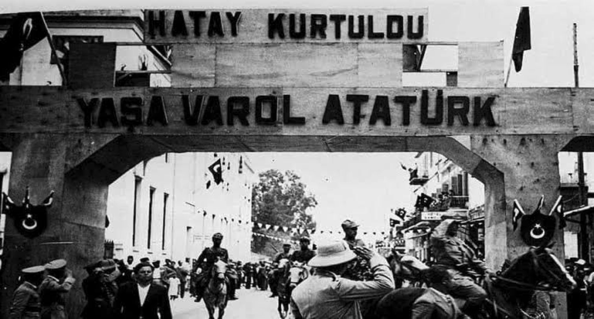
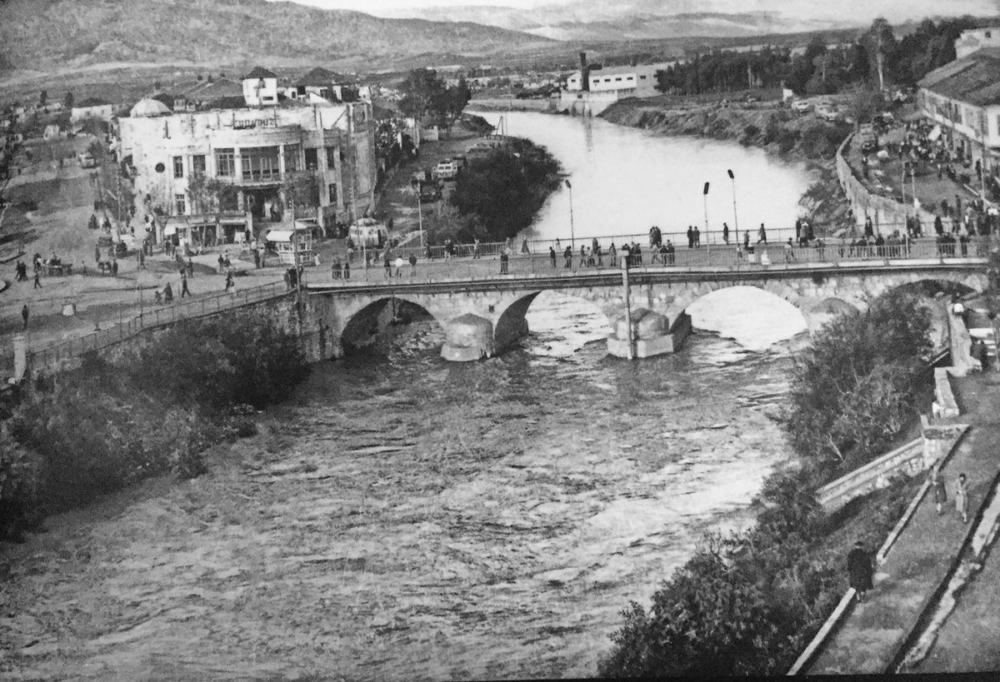

Antakya (Arapça: انطاكيّة, Anṭākye; Yunanca: Ἀντιόχεια, Antiohia), Hatay ilinin nüfus bakımından en büyük ilçesidir ve merkezidir. Yeni düzenlemeyle birlikte Antakya ve Defne Belediyesi olarak ayrılmıştır. Ortasından Asi Nehri geçmektedir. Hristiyanlığın önemli mukaddes mekânlarından biridir.
Tarihçe
Tarih kaynaklarına göre Antakya, MÖ 300 civarında Büyük İskender'in komutanlarından Seleucus Nicator tarafından kurulmuştur. Antik kaynaklara göre Antakya üç yüz bin nüfusuyla Roma İmparatorluğu'nun 3. dünyanın ise 4. büyük kentiydi. Babası Antiochus'un isminden 'Antiocheia' adıyla kurduğu şehir, Silpius Dağı (bugünkü Habib Neccar Dağı) eteğinde ve Asi Nehri (Orontes) kenarında yer almıştı. Acus'un yönetimine giren topraklarda Antakya dışında başka yerlerde çok sayıda Antiocheia daha kurulmuştu.
Tarih Öncesi ve Helenistik Dönem
Antakya civarının tarihi, şehrin kuruluşuna göre çok daha eskidir. Değişik kaynaklarda belirtildiğine göre, Tell-Açana höyüğündeki kazılar Kalkolitik Çağdan (MÖ 5000-4000) itibaren yörenin yerleşim için kullanıldığını göstermektedir. Anadolu'yu Filistin ve Suriye'ye bağlayan yol üzerinde, Mezopotamya'yı Doğu Akdeniz'e bağlayan noktalardan biri olması nedeniyle Hatay'ın eski bir yol güzergâhı olduğu çok açıktır. Burası Hitit ve Eski Mısır İmparatorluklarının sınırlarını oluşturan bölgenin eşiğindeydi.
Makedonyalı Büyük İskender'in doğuya doğru fetihlerini sürdürürken Pers kralı Darius'la yaptığı İssus Savaşı, MÖ 333 yılında, İssus yakınlarında, bugünkü Payas ilçesinde, Pinarus nehri (bugünkü Deliçay) üzerinde gerçekleşmiştir. Bu savaşın hemen ardından İskender, Pers donanmasını limansız bırakmak amacıyla kıyı boyunca güneye ilerledi. Suriye, Filistin ve Mısır'ı ele geçirdikten sonra MÖ 331 yılında, Fırat nehri üzerinde yapılan Gaugamela Savaşı ile Mezopotamya da Makedonyalıların eline geçmiş oldu. Ancak Büyük İskender'in MÖ 323 yılında Babil'deyken ölmesinin ardından fethedilen topraklar İskender'in komutanları arasında bölündü. Suriye ve Mezopotamya bölgesi üzerindeki güç savaşı Seleucus Nicator'un lehine sonuçlandı (MÖ 301). Öncelikle Seleucus krallığının başkenti olarak, Akdeniz kenarında bir liman olduğundan Seleucia Pieria (bugünkü Samandağ, Çevlik) seçilmişti. Seleucus, yendiği rakibi Antigonus (Monophtalmus)'un bugünkü Antakya'nın 5 km. kadar kuzeyindeki yönetim merkezi Antigonia'yı yıkarak halkını kendi adıyla kurduğu bu yeni başkente (Seleucia) naklettirdi. Ancak Mezopotamya civarı ve güney Suriye'nin kontrol edilebilmesi açısından ve Seleucia'nın denizden gelecek saldırılara açık olması nedeniyle yeni bir kent, Antiocheia kuruldu.
Antakya'nın iyilik tanrıçası Tyche, Vatikan Müzeleri
Antakya'ya bağlı Küçükdalyan mahallesinde, Sen Pier (Saint Pierre) Kilisesi: Dünyanın ilk kilisesi olduğu için Hıristiyanlık tarihinde önemli yeri vardır
Bu kent, yendiği rakibinin Antigonia'sıyla aynı yerde değildi, daha güneyde Silpius Dağı eteğinde ve Orontes (Asi) kenarında idi (MÖ 300). Antakya'nın Seleucus Krallığı'nın başkenti olması ise Seleucus Nicator'un ölümünden sonra oğlu Antiochus Soter (MÖ 281-261) zamanında olmuştur.
Cumhuriyet dönemi
Hatay'ın anavatan Türkiye'ye katılması öncesinde, 2 Eylül 1938 tarihinde 10 aylık bir süre varlığını sürdüren Hatay Devleti kuruldu. Toprakları, Milletler Cemiyeti (Cemiyet-i Akvam) belgelerinde İskenderun Sancağı olarak yer alan bölgeydi. 16 Haziran 1939'da TBMM'nde alınan kararla Türkiye ile Hatay Devleti arasındaki sınır çizgisi kaldırılarak geçersiz kılındı. 23 Temmuz 1939'da ise anavatana katılma, son Fransız kıtasının kışladan çıkmasıyla ve Fransız kıtasının da yer aldığı törenle kışlaya Türk bayrağı çekilmesiyle tamamlanmış oldu.
Antakya, 2012 yılında çıkarılan 6360 sayılı kanun ile Hatay ilinde büyükşehir belediyesi kurulmasından sonra ilçe oldu.
Coğrafya
Antakya ilçesinin yüzölçümü 703 km²'dir.[3] Antakya, coğrafi konum ve yüzölçümü bakımından Hatay'ın 2.büyük ilçesidir. Akdeniz iklim bölgesinin doğu ucunda, kıyıdan 22 km kadar içeride olar kentin denizden yüksekliği yaklaşık 80 m'dir. Kuzeyde Nur Dağları (Amanos Dağları) ile güneyde Kel Dağ (Cebel-i Akra) arasında kalan Aşağı Asi Vadisi'nin başlangıcında, Kel Dağı'nın kuzeydoğusunda, 440 m rakımlı Habib-i Neccar Dağı'nın eteklerindedir. Kentin kuzeydoğusuna doğru gelişen ve Hatay çöküntü alanının ortasında yer alan Amik Ovası, zirai potansiyeli çok yüksek kalın bir alüvoyal toprak tabakası ile kaplı olup, aynı zamanda ilin en büyük toprak düzlüğünü oluşturur.
Tepelerin zirvelerine tırmanarak kenti çepeçevre saran sur kalıntıları ve kalesiyle kentin adeta simgesi olan ve eteklerinde Antakya'nın kurulu olduğu Habib Neccar Dağı, kenti güneybatı-kuzeydoğu istikametinde sınırlayan bir dizi tepelerin oluşturduğu doğal bir engeldir.
Antik Çağ'daki ismi Silpius olan Habib Neccar Dağı'nı da içine alan Kel dağı sırası, altyapı serpantin ve gabro gibi yeşil renkli kütlelerin oluşturduğu, üst kısımlarda ise bazalt ve kalkerin hakim olduğu jeolojik bir yapıya sahiptir. Habib Neccar'ın kuzeybatı yamaçları, genç fayların dik basamaklar oluşturduğu parçalanmış, arızalı yüzeyler halindedir.
Nüfus
Anadolu'nun güneyinde, Türkiye Cumhuriyeti'nin sınır vilayetlerinden biri olan Hatay ilinin yönetim merkezi Antakya, 36 10' kuzey enlemi ve 36 06' doğu boylamı ile yurdumuzun en güneyinde yer alan kent niteliğindeki yerleşme merkezidir.
İklim
Antakya ve civarında Akdeniz iklim tipi egemendir. Bu nedenle kentte yazlar sıcak ve kurak, kışlar ılık ve yağışlı geçer. Ancak, kıyı şeridi ile dağların arka kısımları ve yükseltisi fazla olan yerler arasında iklim koşullarındaki bölgesel farklar nedeniyle Antakya'daki iklim koşulları kıyı şeridine kıyasla biraz farklılık gösterir. Bu nedenle sıcaklık, kıyılarda yüksek değerlerde kalır. Yazların, kıyı şeridine kıyasla daha serin geçmesinin bir nedeni de en sıcak ortalamaların kaydedildiği ayların aynı zamanda, Antakya'da rüzgarın en hızlı estiği ve en çok esme sayısına ulaştığı aylar oluşudur.
Asi Nehri
Kuzey yönünde yaklaşık 30 km boyunca Türkiye-Suriye sınırını oluşturacak şekilde akan Asi Nehri, Türkiye topraklarına girdikten sonra batıya döner ve bugün kurutulmuş olan Amik Gölü'nün ayağı Küçük Asi ile birleştikten sonra güneydoğu doğrultusuna yönelir ve Samandağ'ın güneyinde Akdeniz'e dökülür. Antik Çağ'ın Orontes'i olan Asi'nin kaynağı, Lübnan Dağları'dır. Antik çağda küçük tonajlı nehir gemilerinin seyrüseferine imkân veren ve Antakya'yı asırlar boyu Akdeniz'e bir su yolu ile bağlanmış olan Asi Nehri'nin bugün akıttığı ortalama su miktarı, kentin içinde 5,04 m³/sn.dir. Antakya içinden geçen ve bir kanal haline getirilmiş olan yatağı, yaklaşık 2 km uzunluğunda ve 30–35 m genişliğindedir.
Eski Antakya, Asi Nehri ile Habib Neccar Dağı arasında kalan doğu kısmıdır. Asi üzerinde, şehrin iki yakasını bağlayan bir dizi köprü vardır. Eski köprülerden biri olan, Amik Gölü'nün kurutulması projesi çerçevesinde, Asi'nin genişletilmesi ve yatağının taranması çalışmaları sırasında kentin Roma Çağı'ndan beri ayakta duran ünlü taş köprüsü (ki Diocletian zamanında yapıldığı tahmin edilir), 1972 yılında dönemin belediye başkanı tarafından hunharca yıkılarak yerine bugünkü betonarme köprü inşa edilmiştir.
Bağlı beldeler
Avsuyu, Ekinci, Gümüşgöze, Güzelburç, Karaali, Karlısu, Kuzeytepe, Küçükdalyan, Maşuklu, Narlıca, Odabaşı, Ovakent, Serinyol, Şenköy
Bağlı köyler
Açıkdere, Akcurun, Akçaova, Alaattin, Alahan, Alazı, Anayazı, Apaydın, Arpahan, Aşağıoba, Bitiren, Bohşin, Bozhüyük, Bozlu, Büyükdalyan, Çatbaşı, Çayır,Demirköprü, Derince, Dikmece, Doğanköy, Esenbağ, Gökçegöz, Gözluçukur, Güldüren, Güneysöğüt, Günyazı, Hanyolu, Hasanlı, Karşıyaka, Kisecik, Kulaç, Kuruyer, Madenboyu, Mansurlu, Maraşboğazı, Melekli, Oğlakören, Paşaköy, Saçaklı, Saraycık, Sofular, Soğuksu, Suvatlı, Tahtaköprü, Tanışma, Tepehan, Tokaçlı, Turfanda, Uzunalıç, Üçgedik, Üzümdalı, Yakuplu, Yaylacık, Yeşilova, Yoncakaya, Yukarıokçular, Zülüflühan,Yeditepe(Bezge)
Kültür
Türkiye Cumhuriyeti'nin kozmopolit kentlerinden birisidir. Çok uzun bir süre boyunca bir arada yaşamayı öğrenmiş, etnik kökenleri, dinleri farklı birçok topluluğa ev sahipliği yapan bu kent UNESCO (BM Eğitimsel, Bilimsel ve Kültürel Organizasyonu) barış kenti adayı olmuş ve ikinci kent seçilmiştir[22] (UNESCO Sekretaryası bu kategori dahil 8 ödül uygulamasına son verdiğini duyurmuş, ancak şehirlerle ilgili bir veritabanı oluşturmuştur[23]). Çok kültürlü yapısını tarih boyunca korumuş olan ilde aynı ulusa mensup birden fazla dini cemaat bulunmaktadır. Türkler ,Nusayriler, Süryaniler, Katolikler, Ortodokslar, Rumlar, Protestan Araplar, Maruniler , Ermeniler, Yahudiler, Gürcüler ve diğer küçük topluluklar Hatay'ın çok kültürlü yapısının dinamiklerini oluştururlar. Örneğin Samandağ ilçesi çoğunluk olarak Nusayri Araplardan oluşurken, Altınözü ilçesi hem Sünni Arap hem de Türk Müslümanlardan ve Süryanilerden oluşmaktadır.
'Hristiyanlık' isminin ilk kez verildiği şehir olan Antakya'da bulunan St.Pierre Kilisesi Hristiyanlığın en önemli tarihi kiliselerindendir. UNESCO'nun dünya mirası öneri listesindedir [24]. Kilise aynı zamanda Hristiyanlarca hac yeri olarak kabul edilmekte ve her yıl burada 29 Haziran günü Katolik Kilisesince ayin düzenlenmektedir.
Tarihi ve turistik mekanlar açısından da zengin olan ilde dünyanın ikinci büyük mozaik koleksiyonunu barındıran Hatay Arkeoloji Müzesi bulunmaktadır.
Müzenin biten 2. etap çalışmaları neticesinde, müze dünyada mozaik koleksiyonunun sergilendiği en büyük müze olmuştur.
Her yıl 21-23 Temmuz tarihleri arasında kentte Uluslararası Antakya Turizm ve Sanat Festivali yapılmaktadır.
Antakya, Gaziantep ile birlikte Türkiye'deki iki UNESCO Gastronomi Şehrinden biridir ve çok zengin bir mutfağa sahiptir.
217351015
Iskenderun Teknik Universitesi